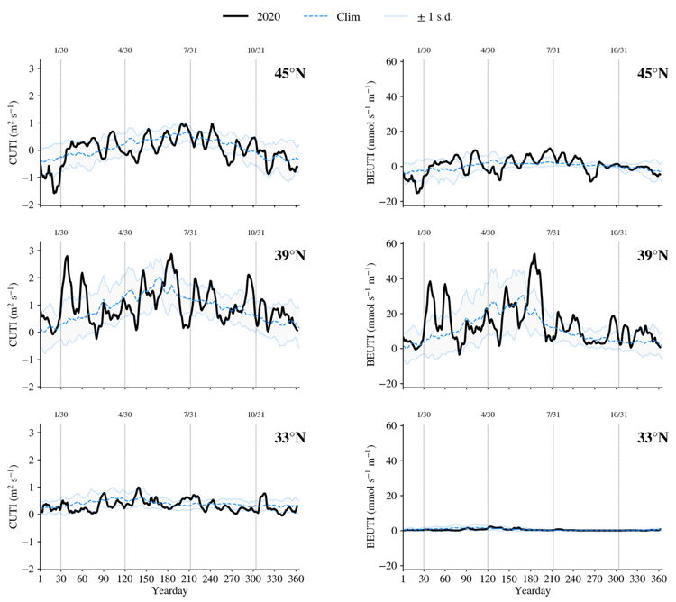

Upwelling Season

Strong winter upwelling preceded an average to above-average upwelling season, Good nutrient supply to the base of the food web, Less compression of cool pelagic habitat along coastline.